2015
The Second Strings Project
A redesign of the Second Strings Project website. SS is a charity organisation focused on providing opportunities to explore music for underprivileged children.
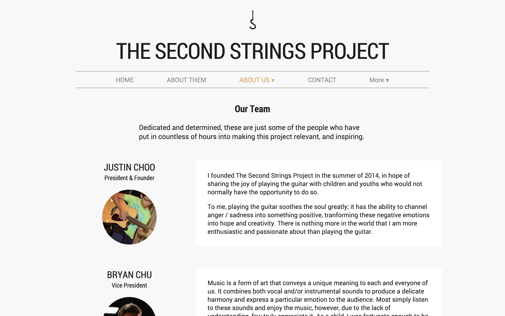2013
The Lizzie Bennet Diaries
A fan-made website for Bernie Su's "The Lizzie Bennet Diaries", a web series adaptation of Jane Austen's "Pride and Prejudice", created with LH for a school project.
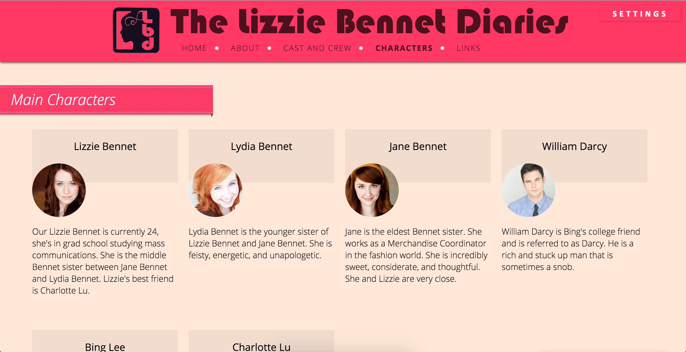2015
"XH" magazine layout
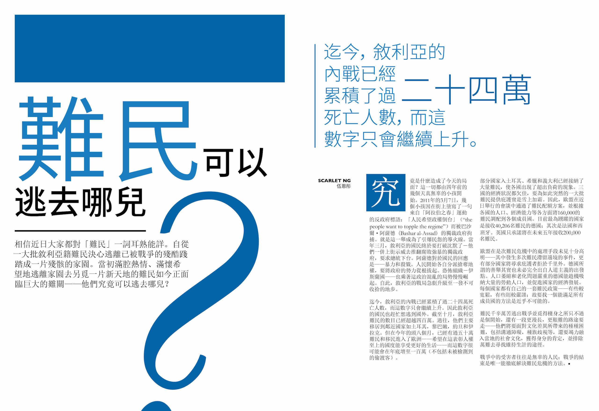2015
"XH" magazine layout

2015
Screensaver
A screensaver built with Java.
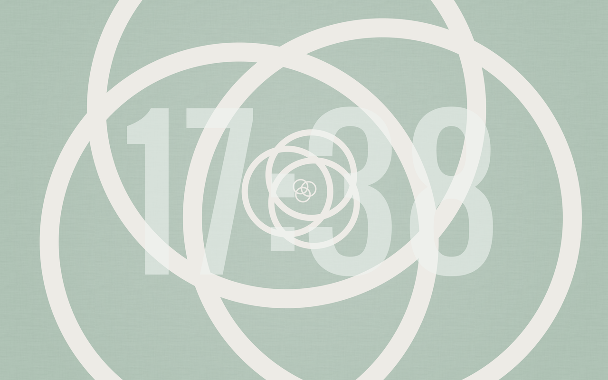2015
"Let's Eat Grandpa"
An educational game built in Greenfoot.

2015
"Cookie"
An exercise in sound design, inspired by the style of Edgar Wright.
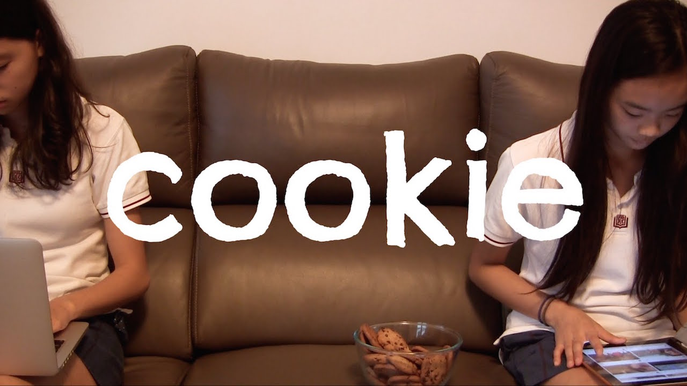2015
"Perfect A"
A music documentary.
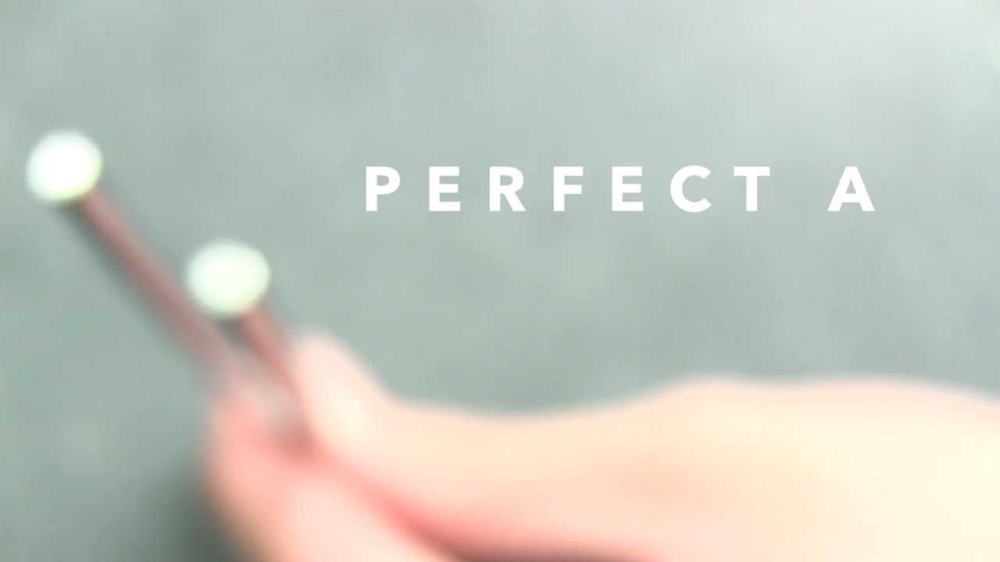
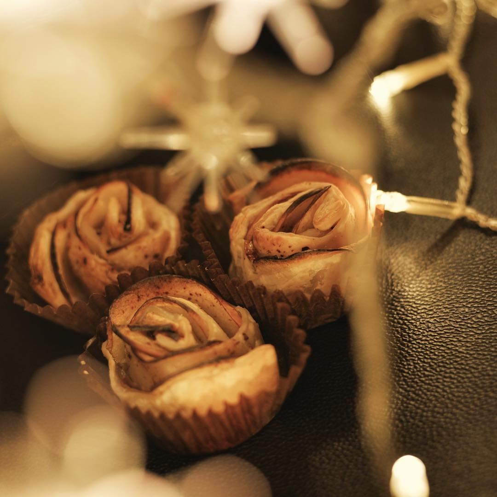
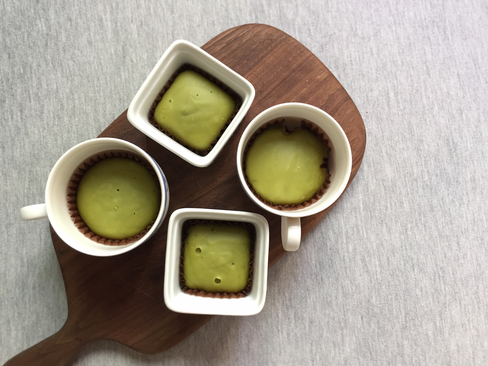
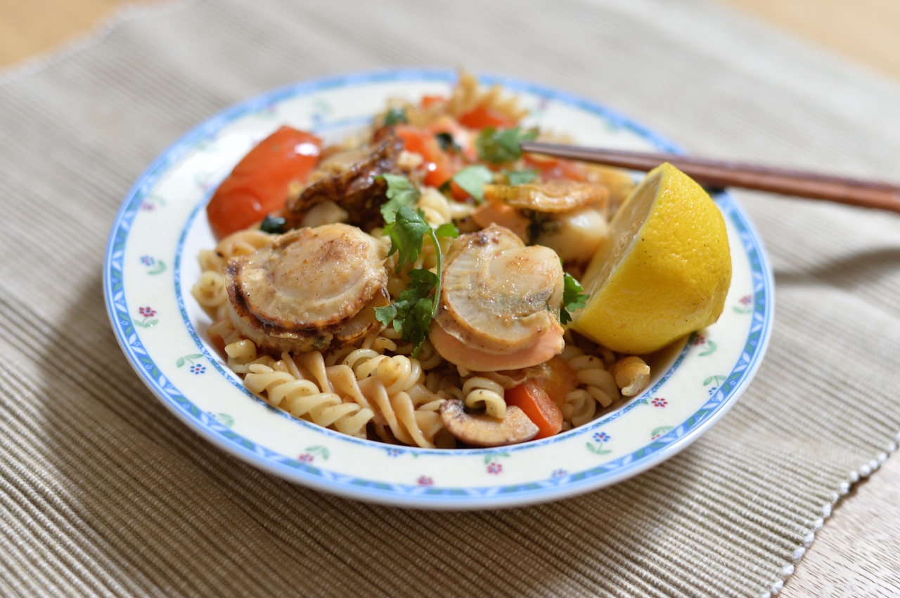
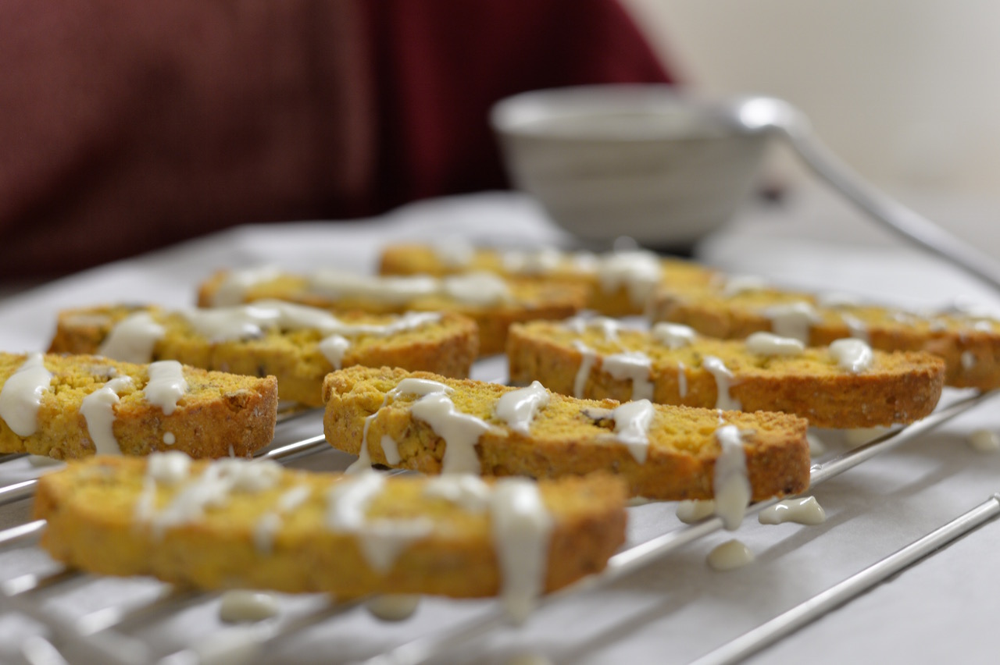
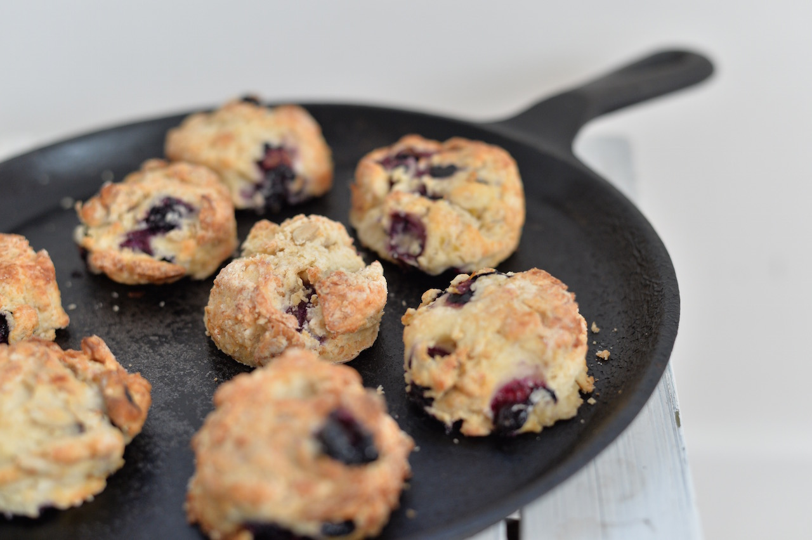